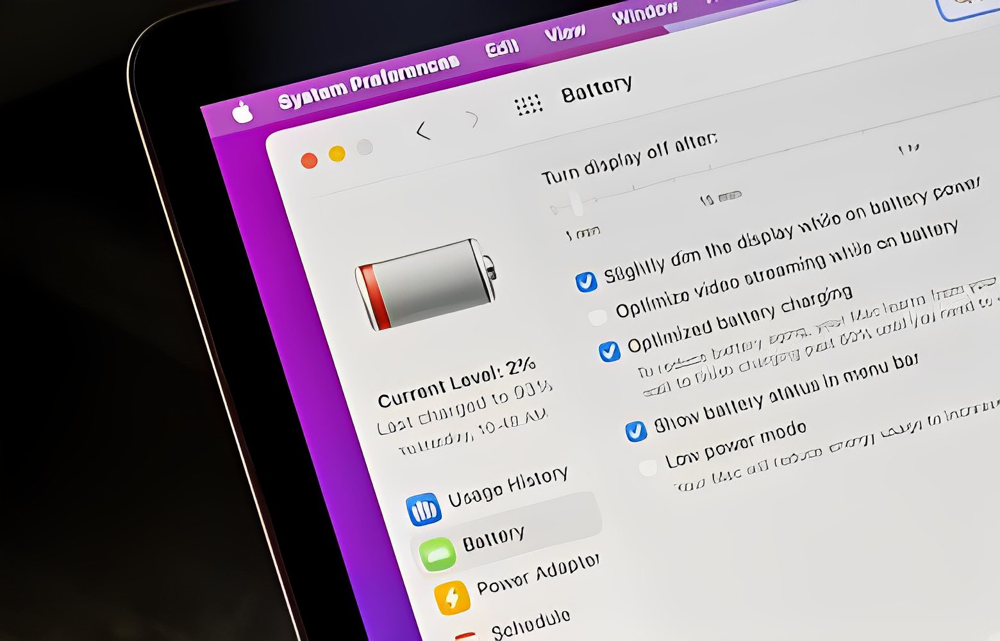

Batterieproblem im MacBook! Wie kann der Zustand des MacBook-Akkus verbessert werden?
Einleitung: MacBooks sind bekannt für ihre Zuverlässigkeit, aber auch sie sind nicht immun gegen Batterieprobleme. Die MacBook-Batteriegesundheit ist entscheidend für die optimale Leistung Ihres Geräts. In diesem Artikel werden wir tiefer in die Ursachen von MacBook-Batterieproblemen eintauchen und praktische Tipps zur Verbesserung des Zustands Ihres MacBook-Akkus geben.
Ursachen für MacBook-Batterieprobleme
Hintergrundprozesse und Überhitzung sind zwei Hauptfaktoren, die die Batterie beeinträchtigen können. Unwissentlich laufende Anwendungen und intensive Nutzung können zu einer schnellen Entladung führen.
Diagnose von MacBook-Batterieproblemen
MacOS bietet Tools zur Überprüfung der Batteriegesundheit. Externe Anzeichen wie plötzlicher Leistungsabfall sind ebenfalls Hinweise auf Batterieprobleme.
Tipps zur Verbesserung der MacBook-Batteriegesundheit
Richtiges Laden und Entladen sind entscheidend. Wir werden auch über die Optimierung von Energieeinstellungen sprechen, um die Lebensdauer Ihrer Batterie zu verlängern.
Software-Optimierung für MacBook-Akkus
Regelmäßige macOS-Updates können Leistungsverbesserungen bringen. Das Deaktivieren nicht benötigter Hintergrundanwendungen ist ein weiterer Schlüssel zur Batterieoptimierung.
Vermeidung von MacBook-Batteriekillern
Beliebte Anwendungen wie Videobearbeitungssoftware können die Batterie stark belasten. Identifizieren Sie energiehungrige Apps und begrenzen Sie ihren Einsatz.
Praktische Maßnahmen zur Verbesserung der MacBook-Batterielaufzeit
Die Nutzung von Energiesparmodi und die Auswahl geeigneter Einstellungen für verschiedene Anwendungen sind praktische Maßnahmen, um die Batterielaufzeit zu maximieren.
Die Bedeutung der Umgebungstemperatur für MacBook-Batterien
Extreme Temperaturen beeinflussen die Batterielebensdauer erheblich. Wir geben Empfehlungen für die besten Betriebsbedingungen.
Mythen über MacBook-Batteriemanagement
Wir klären gängige Missverständnisse und stellen Fakten über die Lebensdauer von MacBook-Batterien vor.
Recycling- und Entsorgungsoptionen für MacBook-Batterien
Umweltfreundliche Entsorgungsmethoden sind wichtig. Erfahren Sie, wie Sie alte Batterien umweltbewusst entsorgen können.
Fallstudien: Erfahrungen von MacBook-Nutzern mit Batterieproblemen
Lesen Sie reale Geschichten von MacBook-Nutzern und entdecken Sie Lösungen für ihre Batterieherausforderungen.
Zukunft des MacBook-Batteriemanagements
Welche technologischen Fortschritte können wir für verbesserte Batterielebensdauer in zukünftigen MacBook-Modellen erwarten?
Expertenmeinungen und Ratschläge
Hören Sie sich die Meinungen von Experten an und erhalten Sie wertvolle Ratschläge zur Maximierung der Lebensdauer Ihrer MacBook-Batterie.
Häufig gestellte Fragen zum MacBook-Batteriemanagement
Wie oft sollte ich meinen MacBook-Akku kalibrieren?
Es wird empfohlen, dies alle paar Monate zu tun, um die Genauigkeit der Batterieanzeige zu gewährleisten.
Welche Apps sind besonders batterieintensiv?
Apps wie Videobearbeitungssoftware, Spiele und Streaming-Anwendungen neigen dazu, mehr Energie zu verbrauchen.
Ist es schlecht, das MacBook ständig an das Netzteil anzuschließen?
Ja, es ist ratsam, das MacBook gelegentlich zu entladen und dann wieder aufzuladen, um die Batteriegesundheit zu erhalten.
Kann ich meinen MacBook-Akku selbst austauschen?
Für die meisten MacBook-Modelle ist dies möglich, aber es wird empfohlen, dies von einem professionellen Techniker durchführen zu lassen.
Warum variiert die Batterielaufzeit meines MacBooks so stark?
Verschiedene Faktoren wie Anwendungsverhalten, Helligkeit des Bildschirms und Hintergrundprozesse beeinflussen die Batterielaufzeit.
Fazit: Ihr MacBook-Akku, Ihre Verantwortung
Ihr MacBook-Akku ist entscheidend für die Mobilität Ihres Geräts. Durch bewusstes Batteriemanagement und die Umsetzung unserer Tipps können Sie die Lebensdauer Ihrer Batterie maximieren und MacBook-Batterieproblemen vorbeugen.